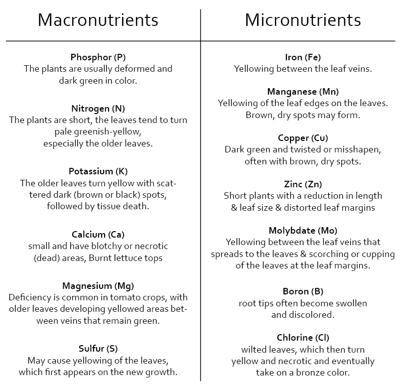
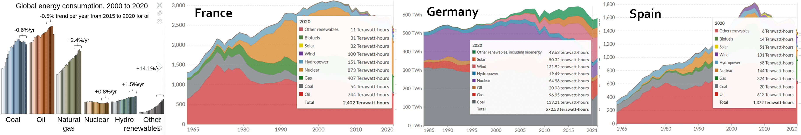

term 2
slow lab
slow lab vision
text
websiten link insta link discord link
compost
what A compost is a humus-rich rotting product from organic waste. The processes of humification and mineralization that take place during composting are similar to the formation of humus in the soil. Last term I built a compost out of basic materials to reuse the food waste I make and also to create good soil for my vegetable plants. An organic waste takes a long time until you can reuse it, that’s why I bought earthworms to help, which means Vermicompost. Vermicompost is the product of the decomposition process using species like earthworms, to create a mixture of decomposing vegetable or food waste, bedding materials, and vermicast. This process is called vermicomposting, while the rearing of worms for this purpose is called vermiculture.
why A longer time ago I started to plant vegetables and sometimes had issues like plant diseases, funghi, lack of nutrients and so one. Also I am separating trash, except from organic waste, because in Barcelona there is no possibility to recycle it, there is no bin for that. So I thought about creating a compost to reuse the food waste and create a nice mixture of nutrients, which I could reuse for my plants. But then I realised it took me to much time so I bought earthworms to start vermicomposting.
status I started to vermicompost on the 19.11.2022 and checked the mixture after 18 weeks. I recognised I have a big amount of nice soil for the compost and also could collect 500ml of nutrients liquid, which could be use as a fertilizer. But it’s not enough to use it for all my plants. Also I thought about to use the compost liquid as a fertilizer/nutrients for the plants for the hydroponicsystem, which is produced by itself. But unfortunately it is not enough and also takes a long time.

alternative way That’s why I researched more about compost to find out. I found a compost called bokashi compost, which works with efficient micro-organisms (EM). These are bacteria that break down matter without the help of vermicomposters. This is why the bokashi works hermetically because naturally, these bacteria are found very deep in the earth and works with very little oxygen. In the same logic, compost must be compacted with each refill. The bokashi compost creates a big amount of natural fertilizer/ compost liquid which I full of nutrients every day. This juice could be a natural fermenter for plants but It has to be diluted with 99% water. low tech bokashi compost
hydroponicsystem
what text
why text
how text
nutrients text
Each plant need various nutrients also they have different kind of deficiency symptoms. Normally plants get it directly from the soil in the nature, which should include all natural nutrients, but because of the use of the big amount of pesticides the soil is dying and looses these important nutrients. Also because the hydroponic system doesn’t consist soil, the nutrients need to be added extra. Hydroponicsystem are really good to save water and space and are very useful when you don’t have a garden and want to grow your own vegetables. So its important to add the right amount and the specific nutrients for the hydroponic plants.
There are different ways to get nutrients, if you have bokashi compost or any other compost which creates a big amount of liquid its possible to use that and mix it with water or you buy chemical one which include all the relevant macro and micro nutrients.
There are different kind of types of nutrients solutions the hoagland solution, the working solution and the steiner solution. Like we humans also plants need micro and makro nutrients. The macro nutrients include proteins and bring energy and micro nutrients include specific ingredients. Nutrients info Nutrients info 2 Hydroponic Nutrients
experiments text
solaroven
what text
why text
how text
experiments text
energy consumption
text
preserving food
dry challenge tries
ferment tomatoes and onions
energy out of lemons
text
right light for plants
text
Term 2